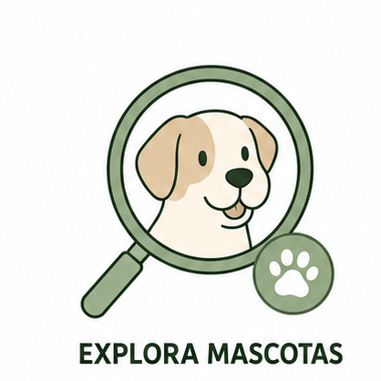
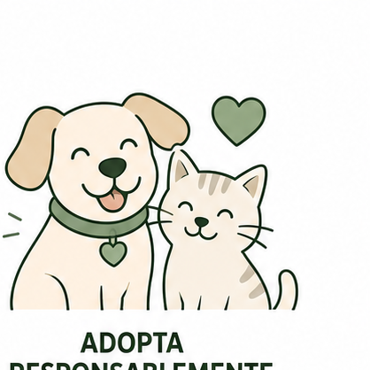
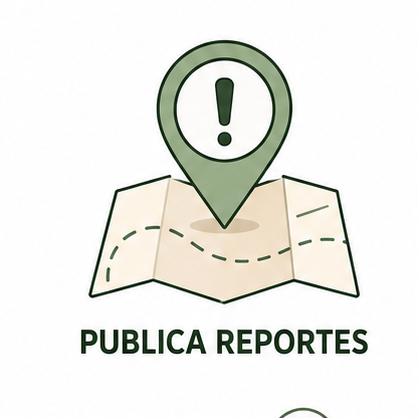
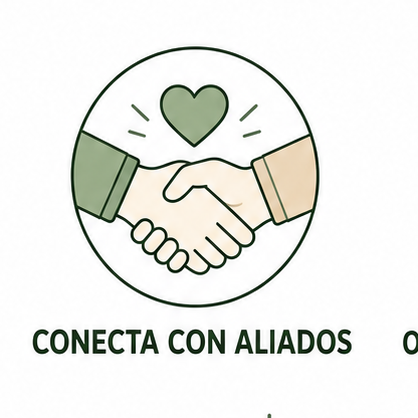
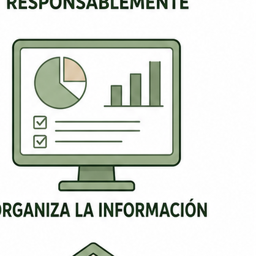

Huellink ayuda a encontrar mascotas en adopción, publicar reportes de mascotas perdidas o encontradas y conectar ciudadanos con refugios, rescatistas y aliados comprometidos con el bienestar animal.
Cargando información...
Disponible para adopciónMascotas registradas
Adopciones logradas
Reportes publicados
Aliados registrados
Una plataforma sencilla para adoptar, reportar y colaborar con aliados.

🔍Revisa perros y gatos disponibles para adopción según ciudad, edad, tamaño y características.
Completa el formulario de adopción para que el responsable pueda revisar tu información.

🐾El proceso busca promover adopciones más ordenadas, seguras y con seguimiento posterior.

📍Registra mascotas perdidas o encontradas con foto, zona, referencia y datos de contacto.

🤝Refugios y rescatistas pueden registrarse para publicar mascotas y gestionar casos.

📊Huellink centraliza mascotas, solicitudes, reportes y seguimiento en una misma plataforma.
Conoce algunas mascotas que esperan un hogar responsable.
Consulta mascotas perdidas o encontradas y ayuda a que puedan regresar con su familia.
Revisa reportes publicados por ciudadanos que buscan a sus mascotas extraviadas.
Ver reportesConsulta mascotas encontradas y registradas por la comunidad para ayudar a ubicar a sus familias.
Consultar encontradasInscríbete en Huellink para publicar mascotas, revisar solicitudes, consultar reportes y hacer seguimiento de adopciones.
Los refugios y rescatistas serán revisados por el administrador para mantener la seguridad y confianza del sistema.
Adopta, reporta o únete como aliado para ayudar a más mascotas desde una sola plataforma.
Comenzar ahora